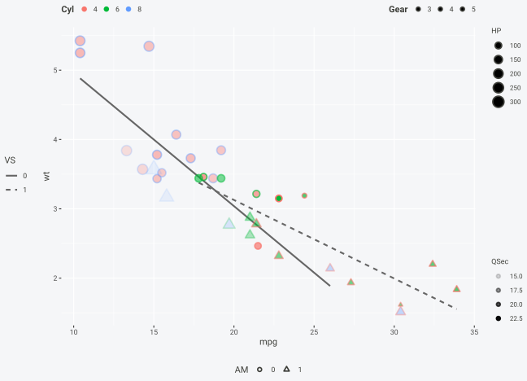

Small exact engines for scientific computing in R.
rearranging the legends on a ggplot


Named one-liners for ggplot2 legend placement, styling, and collection.
Tell it where the legend goes. ggguides wraps the theme(), guides(), and guide_legend() calls behind readable verbs like legend_left(), legend_inside(), and legend_style(), each one a layer you add with +. Where multi-panel layouts duplicate the same legend, collect_legends() and shared_legend() do the gtable surgery to leave one.
library(ggplot2)
library(ggguides)
p <- ggplot(mtcars, aes(mpg, wt, color = factor(cyl))) +
geom_point(size = 3)
p + legend_left()
p + legend_inside("topright")
p + legend_style(size = 14, title_face = "bold")Named verbs over theme() arguments
Moving a legend to the left in base ggplot2 means setting legend.position, legend.justification.left, and legend.box.just so multiple legend boxes line up. The argument names are easy to forget and scattered across theme(), guides(), and scale_*(). ggguides names the intent and sets the related arguments together:
p + theme(legend.position = "left",
legend.justification.left = "top",
legend.box.just = "left") # base ggplot2
p + legend_left(justification = "top") # ggguidesEach function returns an ordinary ggplot2 layer, so they compose like any other + term and stack with your existing theme.
One legend per aesthetic, placed where you want
A plot with several aesthetics gets several legends. ggplot2 lets them share a side; ggguides lets you pick which legend goes where, slide it along the rail, and style it without touching the others. The by argument targets a single aesthetic.

p6 +
# Side placement. Two legends share the top rail, two share the right.
legend_top(by = "colour") + legend_top(by = "fill") +
legend_right(by = "size") + legend_right(by = "alpha") +
legend_bottom(by = "shape") + legend_left(by = "linetype") +
# Slide each one along its rail.
legend_style(by = "colour", justification = "left") +
legend_style(by = "fill", justification = "right") +
legend_style(by = "size", justification = "top") +
legend_style(by = "alpha", justification = "bottom") +
# Appearance per legend.
legend_style(by = "colour", title_face = "bold",
key_width = 0.4, key_height = 0.4) +
legend_style(by = "size", title_size = 9, size = 8) +
legend_style(by = "shape", direction = "horizontal")legend_style(by = ...) calls are additive, so one line per parameter is the intended shape. Full walkthrough in the Multiple Legends vignette.
What’s in the box
-
Placement:
legend_left(),legend_right(),legend_top(),legend_bottom(),legend_inside()(corner shortcuts orx/ycoordinates),legend_none(). -
Styling:
legend_style()for size, font, background, border, and margins;legend_wrap()for columns or rows;legend_reverse()andlegend_order()for entry order;legend_keys();colorbar_style()for continuous scales. -
Multiple legends:
legend_hide()/legend_select()to drop or keep legends by aesthetic,legend_order_guides()for display order, and thebyargument on every placement and style function. -
Multi-panel:
collect_legends()andcollect_axes()for patchwork compositions,shared_legend()to combine plots with one legend without patchwork, andget_legend()to pull a legend out as a standalone grob for cowplot or base grid.
Shared legends across panels
collect_legends() removes the duplicate legends a patchwork layout produces and keeps one. For stacked plots, span controls whether that legend centers, fills the full height, or attaches to specific rows.
library(patchwork)
p1 <- ggplot(mtcars, aes(mpg, wt, color = factor(cyl))) + geom_point()
p2 <- ggplot(mtcars, aes(mpg, hp, color = factor(cyl))) + geom_point()
p3 <- ggplot(mtcars, aes(mpg, disp, color = factor(cyl))) + geom_point()
stacked <- (p1 / p2 / p3) + plot_layout(heights = c(4, 2, 1))
collect_legends(stacked, position = "right") # centered
collect_legends(stacked, position = "right", span = TRUE) # spans full height
collect_legends(stacked, position = "right", span = 1:2) # attaches to rows 1-2Without patchwork, shared_legend() arranges plots and draws a single legend directly:
gt <- shared_legend(p1, p2, p3, ncol = 1, position = "bottom")
grid::grid.draw(gt)Installation
install.packages("ggguides") # CRAN
install.packages("pak") # development version
pak::pak("gcol33/ggguides")Support
“Software is like sex: it’s better when it’s free.” — Linus Torvalds
I’m a PhD student who builds R packages in my free time because I believe good tools should be free and open. I started these projects for my own work and figured others might find them useful too.
If this package saved you some time, buying me a coffee is a nice way to say thanks. It helps with my coffee addiction.